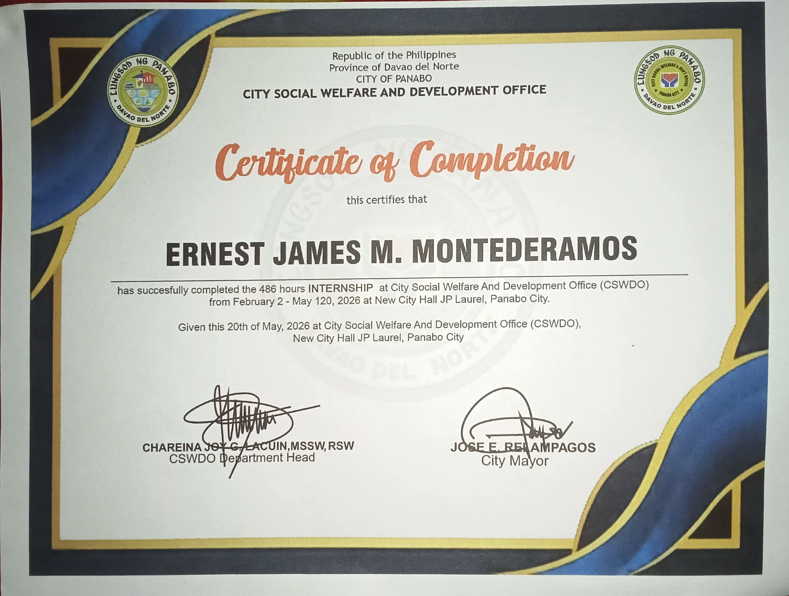
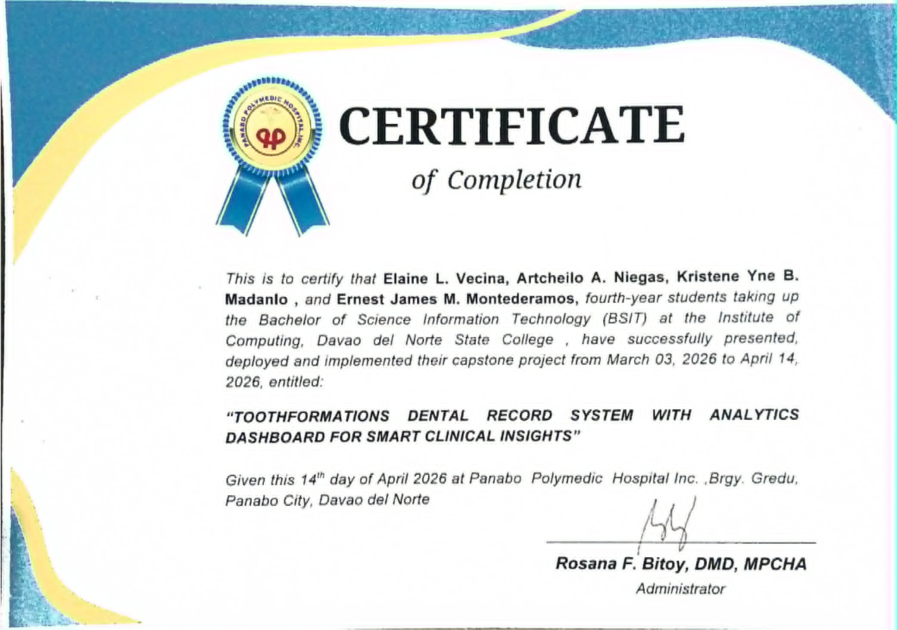
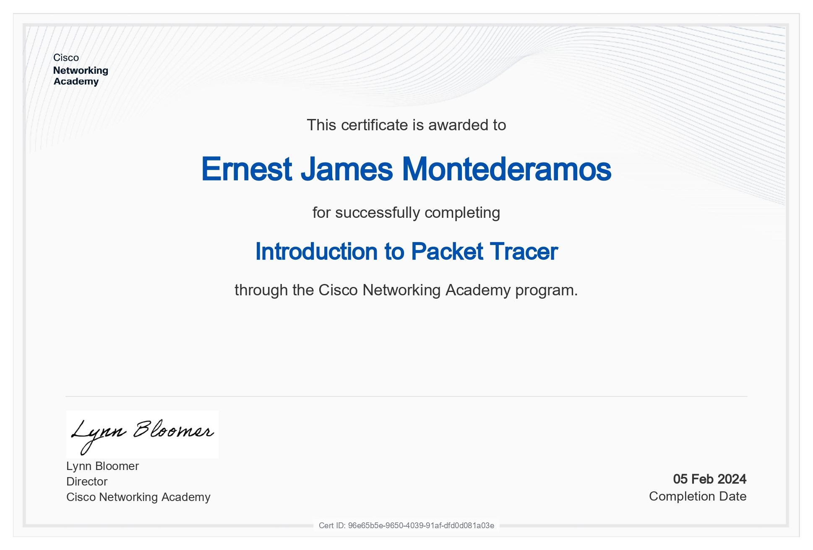
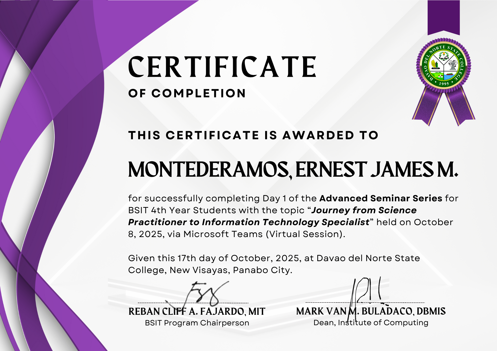
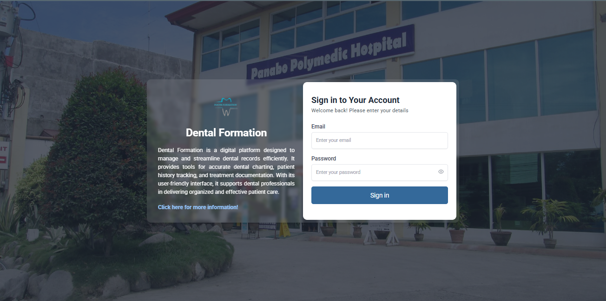

Certificates & Achievements

Certificate of Completion

Certificate of Completion

Network Academy Certificate

Advance Seminar Day2
Advance Seminar Day2

Cetificate of Participation
Passionate BSIT student with an interest in web development, programming, and creating innovative digital solutions that enhance efficiency and user experience.
I am a Bachelor of Science in Information Systems (BSIS) student who is eager to learn and grow in the field of technology. I have a strong interest in web development, programming, and information systems, and I enjoy exploring new technologies that can help solve real-world problems. I am passionate about creating practical and user-friendly digital solutions while continuously improving my technical, analytical, and problem-solving skills. Through academic projects, internships, and hands-on learning experiences, I strive to develop my knowledge and gain valuable experience that will help me become a competent IT professional in the future.

A dental clinic management system designed to streamline daily clinic operations by organizing patient records, appointment scheduling, and treatment tracking in one centralized platform. The system helps dental staff manage patient information efficiently, monitor ongoing treatments, and maintain accurate dental records for better patient care. It also includes analytics and report generation features that provide insights into clinic performance, appointment statistics, and treatment trends. By automating administrative tasks and improving data management, the system enhances workflow efficiency, reduces manual errors, and supports better decision-making for the dental clinic.

Certificate of Completion

Certificate of Completion

Network Academy Certificate

Advance Seminar Day2
Advance Seminar Day2
Cetificate of Participation
City Social Welfare and Development Office (CSWDO) 486 Hours Internship Assisted in encoding, organizing, and maintaining office records and documents. Provided technical support for computer-related tasks and office operations. Assisted staff in data entry, report preparation, and administrative activities. Demonstrated professionalism, teamwork, and effective communication in a government office environment.
Computer Systems Servicing (CSS) NC II Passer – TESDA Certified in installing and configuring computer systems, setting up networks, and maintaining and repairing computer systems and networks. Skilled in computer troubleshooting, hardware and software installation, and basic network configuration.